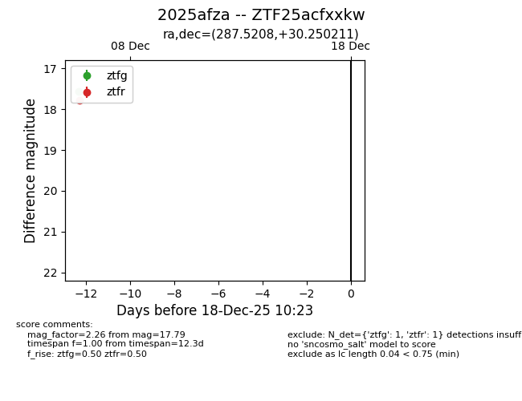
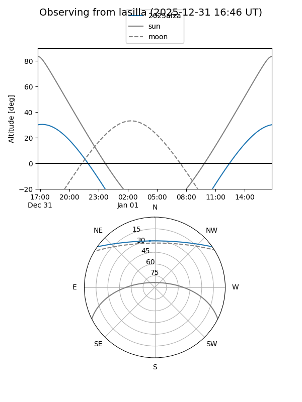
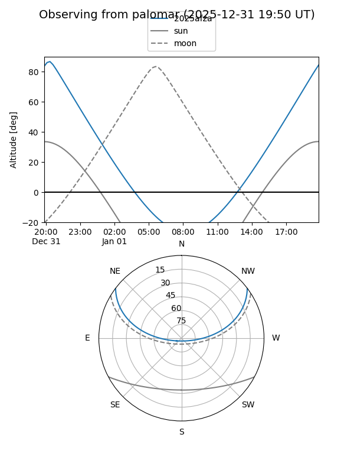

2025afza
Target 2025afza at 2025-12-31 18:00
Aliases and brokers:
FINK: link
Lasair: link
ALeRCE: link
TNS: link
YSE: link
alt names
ZTF25acfxxkw (ztf,fink_ztf)
2025afza (tns,yse)
Coordinates:
equatorial (ra, dec) = 287.5208,+30.25021
equatorial (HMS+DMS) = 19:10:04.99,+30:15:00.76
galactic (l, b) = (62.0904,+9.62722)
Flags:
Photometry:
last ztfg=17.56, ztfr=17.79
1 ztfg, 1 ztfr detections
Lightcurve

Visibility


Additional plots